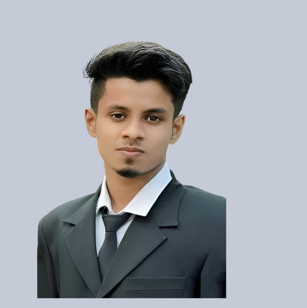

Bengaluru · India
Building better teams and better products.
Assistant Manager in Academic Operations with a Full-Stack Development background. I connect people, processes and technology to solve real problems.
Currently
ODA Class · Assistant Manager

ROLE
Academic Operations
Team · Performance · Student Engagement
STACK
PythonDjangoReact
01 · IMPACT
Numbers tell part of the story.
ABOUT ME
People-first operations. Technology-minded problem solving.
My career sits at the intersection of academic operations, team coordination and software development. I have managed fast-moving workflows, supported students, monitored performance and built internal web applications.
I’m especially interested in using technology to simplify repetitive work, improve communication and create useful digital experiences.
01LeadershipTeam guidance & performance tracking
02OperationsWorkflow coordination & issue resolution
03DevelopmentWeb apps with Django, React & Redux
04MentoringTechnical and academic guidance
02 · EXPERIENCE
2022 — Present
A career built across people & technology.
APR 2026 — PRESENT
ODA Class
Assistant ManagerManaging and guiding academic operations, team performance and student engagement while supporting 4000+ students weekly.
- Monitor team performance and operational targets.
- Coordinate with internal teams for workflow and issue resolution.
- Support training, performance tracking and daily operations.
- Provide structured mentorship and communication support to students.
JUL 2024 — APR 2026
ODA Class
Academic MentorMentored students in technical subjects, project understanding and structured academic learning.
- Simplified complex concepts for better learning clarity.
- Provided academic guidance and structured support.
- Assisted students with assignments and technical learning.
MAR 2023 — MAR 2024
NoBroker
Associate Relationship ManagerManaged client communication, service-related queries and coordination between customers and internal teams.
- Managed customer communication and support.
- Coordinated service workflows with internal teams.
- Ensured smooth processing and customer experience.
MAY 2022 — FEB 2023
TECH I.S
Full-Stack DeveloperWorked on internal web development, CRM backend work and applications for company requirements.
- Worked on internal web development projects.
- Developed applications according to company requirements.
- Worked on CRM backend functionality.
- Supported students with web development and data science concepts.
03 · SELECTED WORK
Projects that solve actual problems.
01
WEB APPLICATION · TECH I.S
Leave Management System
A leave management application built for employees across USA, Tokyo and Bangalore, integrated into the TECH I.S Task Management System.
10+ functionalities
10+ device platforms
40% less hassle
DjangoReactReduxREST/API
LEAVE REQUESTAnnual Leave
B.TECH PROJECT
Stepper Motor Based Flow Control Valve
Controller design and validation project combining electronics, control and practical system thinking.
04 · TOOLKIT
Tools I use to turn ideas into outcomes.
ReactFrontend
ReduxState management
HTML / CSSWeb fundamentals
JavaScriptWeb programming
DjangoBackend
PythonProgramming
MySQL / SQLiteDatabases
Git / GitHubVersion control
ExcelAnalysis & operations
Team ManagementLeadership
Performance MonitoringOperations
CommunicationStudent & client engagement
05 · EDUCATION
7.34CGPA
B.Tech — Electrical & Electronics Engineering
Prist Institute of Engineering & Technology · 2016 — 2020
CERTIFICATIONS
Web Development in HTML & CSSMasai School
Programming in CIIT Bombay / Indian Institute of Bombay
AutoCADCertified Professional
Web DevelopmentSpark Technologies Pvt. Ltd.
Cambridge English ESOLCambridge Institution, U.K.